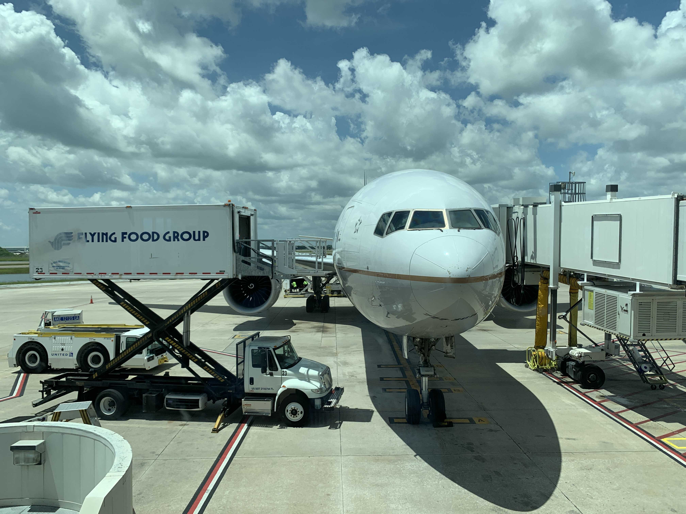
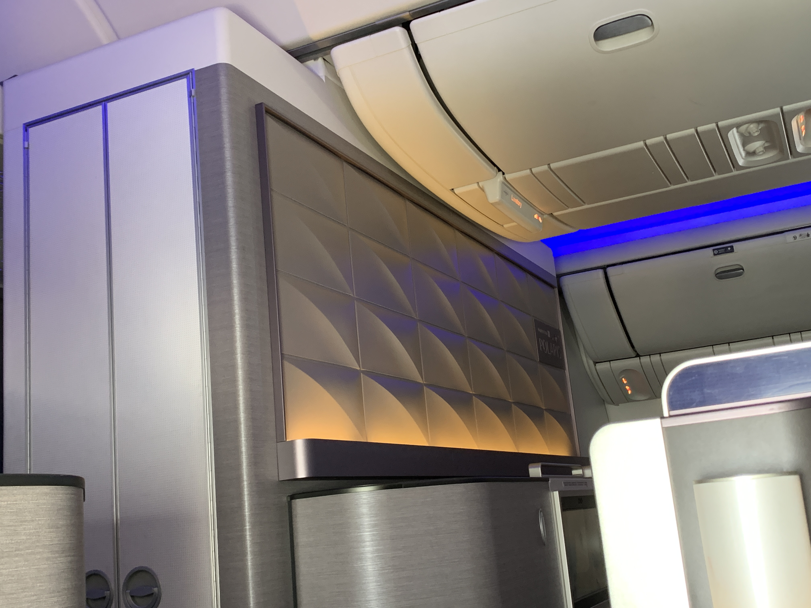

United Airlines Boeing 777-300ER Chicago to Orlando and Back in First Class (Polaris Seat)
All Posts: Welcome Back to the Skies
- United Airlines Boeing 737-900ER Minneapolis to Chicago in First Class
- This Post: United Airlines Boeing 777-300ER Chicago to Orlando and Back in First Class (Polaris Seat)
- United Club B6, Chicago O'Hare
Below is Post 2.
There are going to be sections in this post as there are two flights combined into one. So, some of the intro pictures are from Orlando, but I actually flew Chicago to Orlando to Chicago. Meaning that some of these pictures are not going to be in the correct order.
I did make a video about these flight, check it out!
Here’s the plane kind of “cooling off” from a short hop after the Chicago to Orlando flight (UA1944), it will return to Chicago in around an hour (UA1500).
If you look from far in the distance, it kind of looks a bit scary, no? I mean, one could mistake it as a hunting bird. Honestly, now that I think of it, it kind of looks as fierce as an, shall we say, eagle. Both an eagle and this plane flies in the air, no? I just cropped the face of an eagle onto the plane.
 Here’s a close-up of the bird. Now it’s a bit less scary. It’s N2142U, by the way (nose #2142).
 Or maybe not… after all, it’s a bird that just spotted its prey.
Or maybe not… after all, it’s a bird that just spotted its prey.
Haters will say it isn’t fierce. But it’s got two of the strongest turbofans in the world. So… ¯\_(ツ)_/¯.
After I landed from Minneapolis, I made a mad dash from B6 to B16, which is probably like 10 gates away (there’s no B13 due to some superstition). Screenshot from the United App.
This is where they were with boarding when I got there. So, good timing as I was Group 1 and Group 2 boarding hasn't started yet.
I enjoy the blue jetbridges. Something I missed from over a year (and a half) of not flying through ORD.
I boarded through L1 just for the experience. Here’s how it looked from the end of the jetbridge. Both forward and rear first (Polaris) cabins were rather full.
There’s a plaque at L2, which I think improves the cabin aesthetics. This was taken during cruise, on the outbound to Orlando.
When I boarded, most of the First Class (Polaris seat) cabin was full of people, so these pictures were ex-MCO, and the cabin doesn’t seem to be the cleanest as ex-ORD. I’m hoping this isn’t the situation for international flights. Here’s the rear cabin, containing 32 of the 60 seats.
Here is the forward cabin.
There’s a bar area (“Midflight Hospitality Area”) that was not used for either flight (it’s a domestic hop to Orlando, why does it matter?).
The attention to detail was really good by the design team, just look up.
Ex-ORD, I had 9A. This seat contains a bassinet and should be selected with caution when flying long-haul or internationally, but this wasn’t offered during this short hop. More on the positives of this seat later.
Ex-MCO, I had 5L. This is one of the better seats in the cabin (any odd row number is) because of the privacy. Not that the others are half bad either… but I would pick these seats anyday.
Here’s the view after boarding. Not bad. A lot of people commented about the seat while boarding, and they were positive comments “first class looks nice”. It’s definitely much better than the recliners used!
 All seats have a shoulder strap, required for certain periods of the flight (taxi, takeoff, landing, etc.). Though it didn’t seem to be enforced during turbulence.
All seats have a shoulder strap, required for certain periods of the flight (taxi, takeoff, landing, etc.). Though it didn’t seem to be enforced during turbulence.
Here’s the view from 9A, which is a really nice engine view. Get rid of the other plane and flip this picture horizontally for an impression of the view from 9L.
Here’s the view from 5A. Not half bad, much quieter (minus engine startup). Flip horizontally and add jetbridge connected to this plane for an impression of the view from 5A.
Each seat comes with a decent lamp lighting (feels a bit like home), as well as a reading light over the shoulder, remote, 110V, USB port, USB port, and 2-prong headphone jack.
But what takes up the most space here is the storage compartment. I put in a water bottle but later tossed in a camcorder.
Here’s a mirror too, though it’s quite dirty. I removed the headphones from the hook but didn’t use it at all. I used it in 2019 and wasn’t quite impressed.
The headrest is also quite adjustable. But the best part is not the headrest…
It’s the lie-flat seat! It can lie completely flat and is controlled by some seat controller. I like the wheel, but apparently some people have bumped into it (I did once on the return, but it was while I was standing, cleaning up my seat during the boarding process).
This is why you should choose the bulkhead (rows 1 and 9 on either Boeing 777 aircraft), because of the decent footwell. Though the footrest that extends from the seat isn’t exactly made to fit snugly against the part closest to the wall (about 2 inches at the widest), given those were made for other odd-numbered rows.
By this time, one should note the storage cubby, which doesn’t seem to be allowed to be used during takeoff, so the adaptor was placed into the larger storage cabinet just off to my right shoulder.
This is my camera bag, tossed into the footwell for reference.
 I had to move it underneath for the critical portions of the flight. I don’t know whether it’s actually allowed to be there for takeoff (if it wasn’t, I would just toss it in the overhead bin and grab it first opportunity I get), but no one seemed to have a problem with this. I want to note that it seems that each seat got its own overhead bin, so storage shouldn’t be an issue here (meaning that everyone can bring the regular carry-on allowance without running into storage issues). It was not an issue for me today, with a backpack and a camera bag.
I had to move it underneath for the critical portions of the flight. I don’t know whether it’s actually allowed to be there for takeoff (if it wasn’t, I would just toss it in the overhead bin and grab it first opportunity I get), but no one seemed to have a problem with this. I want to note that it seems that each seat got its own overhead bin, so storage shouldn’t be an issue here (meaning that everyone can bring the regular carry-on allowance without running into storage issues). It was not an issue for me today, with a backpack and a camera bag.
Here’s the legroom for 9A (and possibly row 1).
 Here’s the legroom for 5L (and any other odd-numbered seat, basically).
Here’s the legroom for 5L (and any other odd-numbered seat, basically).
 Upon boarding, I got this sanitizing wipe for my seat. That seems to replace the pre-departure beverage, which I probably took for granted before the pandemic. I just drank out of my water bottle.
Upon boarding, I got this sanitizing wipe for my seat. That seems to replace the pre-departure beverage, which I probably took for granted before the pandemic. I just drank out of my water bottle.
Then United seemed to install hand sanitizer dispensers around the plane, which was nice and hopefully stays.
The lavatories ahead of Door L1 are not too big. They’re in the aisle to the cockpit. It’ll probably be blocked if a pilot needs to use a lavatory. Don’t use those for changing. Instead, use the one by Door L2. There’s two at the second doors of each side.
The one on the left side are far more spacious than the one on the right because of the absence of stowage. It’s logical. There’s no other way to toss in a large lavatory there without changing any of the 32 business class seats plus 24 premium economy (Premium Plus) seats.
The sink looks identical at all of the lavatories. I appreciate how these sinks were automatic. These pictures of inside the lavatory were taken during boarding, by the way, and only one person used it before I did.
Here’s the toilet. For the other lavatories, just imagine that without the empty space to the right. It’s really clean because the plane was cleaned after coming in as UA219 from Honolulu about 3 hours ago. I don’t think I can say the same during boarding, ex-MCO, because it spent less than 2 hours on the ground. It wasn’t the cleanest, but usable.
Sunday Riley amenities were also available. I tried the hand moisturizer (my hands are always dry). Remarkable on a plane, but you won’t believe how horribly dry my hands can get.
Privacy from 9A was nice. Note the coat hook holding my hat.
5L, not too shabby, but I could see the screen of 4G. This time, the coat hook also has my sweatshirt; no blankets on domestic first so I used it as one.
 The bulkhead of the rear cabin is nicely designed.
As is the bulkhead of the forward cabin.
I always check the safety card, regardless of aircraft type, but most of the time it’s mostly the same. This is a B77X (not the Boeing 777X), and pink kind of seems off brand for United.
When I reclined 9A into its lie-flat configuration, this is what I see when looking directly up.
When the seatbelt sign was turned off, I snapped a picture of the overhead panel. The light is controlled by only the remote or IFE.
Here’s the drink options (non-alcoholic) from the magazine. UA is the only carrier flying with their magazine at the time of writing, as far as I know.
Here are the snackbox options. I tried both the Tapas and Takeoff options; the Recline option was not offered to me.
Ex-ORD, I had an Orange Juice to drink. Not ordering that again, it was horrible and I am not a fan of “juice from concentrate” in any case.
Ex-ORD, I was offered a snackbox or hot sandwich selections of “Everything baguette, which is kinda vegetarian and comes with veggies and cheese, or the ham and egg [croissant]”, very descriptive! What wasn’t descriptive was the snackbox, so I asked for that. The FA walked out with a tray full of food and walked back to grab another snackbox and continued to do so, all while being descriptive in offering the food.
I do wish I had something to compare the size of that with, but oh well. Here it is, in all its glory, the “Tapas snackbox”.
I opened it and set its contents on the tray table. By the way, I cleaned the tray table, and it’s all packaged, so I didn’t feel too bad. Oh dear. It looked horrific.
The almonds were tasty, well-seasoned, and probably one of the best parts of the snackbox (in the sense that it had the most flavor). Both dipping sauces (“bruschetta spread” and “traditional hummus”) were rather bland, which meant that they didn’t compliment well with the “Italian breadsticks” nor “sourdough flatbread crackers” to make a difference. The olives had much more flavor than either dipping sauce. Finally, I have a sweet tooth (maybe even two), so the chocolate was nice.
When a FA went to collect my trash, she asked me if there was something else she could get me. I asked for a ginger ale, solely to wash down the snack box. That, alone, should be telling.
Ex-MCO, I asked for sparkling water, “flavored or unflavored?” I had the “flavored” option, which turned out to be…
“AHA Sparkling Water”. I kid you not, this is the actual brand of this water. I’ve never tried it before, never heard of it before, and was really surprised to see this. Of course, I probably should’ve been aware when reading the magazine, but seems United did away with the “Dasani’s Lime Sparkling Water” option.
The nutrition info didn’t really sound interesting at all. Bunch of zeros…
This is what AHA writes about the flavor. By the way, the flavor was “Orange + Grapefruit”, not “Lime”.
Ex-MCO, it seems that only snackboxes were offered. Having tried the “Tapas” on the outbound, I tried the “Takeoff” option. By the way, this was served an hour after takeoff due to turbulence requiring the captain to advise the FAs to take their jumpseats.
I opened the box to find a bit more in this box. Of course, I had the almonds first. They’re cold (as with either snackbox), but still nice.
Here’s the contents. Some resemblance to the other snackbox (two breads and two dips), but this contained meat (probably in lieu of olives), Toblerone (probably in lieu of the chocolate), and apricots (this time it’s not in lieu of anything else; it’s an extra item over the other snackbox). The dips were much more flavorful than the other snackbox (ok, I’m a cheese person from Wisconsin). I also like how the Salami Slices were from “Old Wisconsin”, the company of which has quite a bit of history originating from Sheboygan back in 1942. As a Wisconsinite, I am happy and that was a highlight of the snackbox. I am going to offer no comment on the Toblerone.
I didn’t ask for ginger ale this time to wash it down. I packed my trash into one box for the FA’s convenience when they pick it up, turned on “Do Not Disturb”, and went to sleep.
Out of the two snackboxes, I enjoyed the “Takeoff” much more than the “Tapas” because of the flavor and the meat option (though the “Tapas” is vegetarian, I am not, so that may factor into one’s decision). These cost $10 to buy if flying in Economy; I would not spend that much on either. I would place the “Tapas” snackbox worth $5 and the “Takeoff” worth $8. I’d rather spend the $10 on a cheeseburger or hot dog (later). I could buy a McDonald’s meal for less than $10 (burger, fries, and drink)!
Ex-ORD, I sat in 9A. Here’s the screen at boarding (windows were closed).
 Ex-MCO, I sat in 5L. Here’s the screen at boarding (some windows were closed).
Ex-MCO, I sat in 5L. Here’s the screen at boarding (some windows were closed).
The screen locks up during announcements.
As the Tokyo Olympics were near, I watched a documentary when I had my first snackbox, ex-ORD (I didn’t watch anything except the moving map ex-MCO).
 I liked how there were suggestions after, though they don’t consider the remaining flight time.
I liked how there were suggestions after, though they don’t consider the remaining flight time.
Split-screen mode was also something that was nice, I viewed the moving map in split-screen just to experience it. The IFE system won a Crystal Cabin award recently.
Here’s the jetbridge to L2 at Gate B16 in Chicago (B16A).
I spotted a Korean Air B77W on the taxi to the runway in Chicago, but my camera was stowed.
In the middle of the day (we arrived before 1:00pm), there were some fiercesome thunderclouds that began to build up.
Do we have to fly through that?
Spoilers were used on approach.
And there was this weird-nose-looking Boeing 757-224 in Orlando.
Boarding (and deplaning) in Orlando was through L2 only (there was only one jetbridge), so I turned left after boarding. It’s always exciting to turn left after boarding, and it means for quieter during boarding.
Though not always. The overhead bin popped open during taxi to the runway at Orlando. Thankfully that didn’t become a problem as a FA noticed that and joked with passengers nearby about it.
It is so much more quieter during takeoff from the forward cabin, versus the rear cabin. It’s probably more quieter at row 1.
Of course, I had the Louisville hot dog from America’s Dog in Chicago. Either would cost less than $10, but the total was around $17 after buying water.
Service was nice onboard. First, I got recognized from a Hong Kong flight two years ago! I am honestly so surprised that happened, and it shows that we live in a small world! She flew with us ex-ORD as well. I don’t know if she was based in Hong Kong or Chicago before the pandemic, though. Not a good time to ask. Second, I noted how another FA was incredibly patient with a passenger who was hard of hearing. She went above and beyond, helping him with reclining the seat, the IFE, etc. Third, it must be a little frustrating to have to state the descriptions of the food over and over as well as walk back to the galley every time to replenish. This is incredibly personal and incredibly nice, and I appreciated it. Finally, I appreciate how the crew was most likely worrying during the pandemic about many things, such as their job security, how they’ll make ends meet, and the fear of dealing with a passenger who is unruly and/or refuses to wear a mask (throwing a “fit” along the way).
A kicker was how the moving map stopped showing anything besides a plain map after landing in both directions, which I didn’t understand. Maybe just show the route and vitals (speed, heading, etc.)?
Overall, not bad. As for the hard product, I never complain about a lie-flat seat on a two/three-hour domestic hop, and you shouldn’t either. It might be worth the upgrade, it might not. But it’s still lie-flat. If you’re seated in it, then what more can you say? Don’t complain when it’s a widebody, either! As for the soft product, meh. I would rather spend $20 (probably even less than that) for more of the food and beverage offered (a full meal and a larger bottle or two, versus a snackbox and two cans of drinks). Plus, I like stroopwafels (though it’s on me for not asking for one “from the back”).
And it’s more certain that I can’t complain about it when this was a complimentary upgrade on a $545 S-class fare bucket for four flights. As a Premier, I get to sit in First Class where available, for free! Three out of my four flights cleared, including the two featured in this report. I am appreciative of what I got and have no reason to complain.
I am glad I caught this “secret upgrade” of an aircraft. If United really wanted to put a widebody on this route, they would’ve likely thrown a Boeing 777-200 configured in high density with significantly fewer first class seats in a significantly worse configuration. Not to mention no IFE for Economy. That didn’t happen thanks to the Boeing 777-200 grounding with PW engines.
60 first class seats out of 350 total is a bit much, though. More than 50% of the cabin either goes out empty or is filled with complimentary upgrades. There is no way United will turn a profit with this aircraft on this route as there is no way there’s that much premium demand. Next month, this flight will be flown with a Boeing 757-300 with significantly less first class seats but with a decent amount of economy seats.
All Posts: Welcome Back to the Skies
- United Airlines Boeing 737-900ER Minneapolis to Chicago in First Class
- This Post: United Airlines Boeing 777-300ER Chicago to Orlando and Back in First Class (Polaris Seat)
- United Club B6, Chicago O'Hare